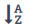
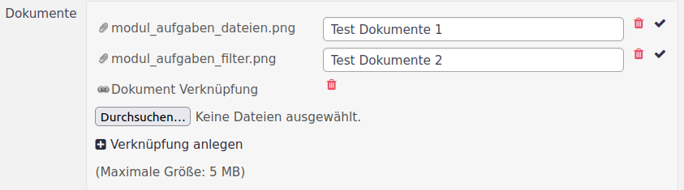
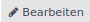
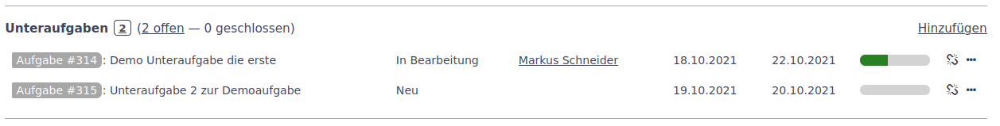
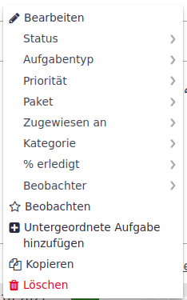
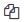
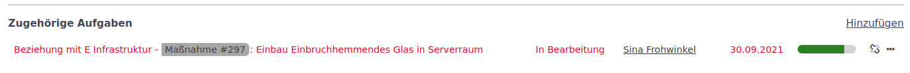
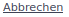
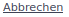
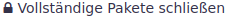

Aufgaben
Funktion Aufgaben
Aufgaben sind das wichtigste Modul in der Anwendung. Mit Hilfe des Aufgabenmoduls werden
-
Sicherheitsanforderungen, z.B. nach DIN ISO/IEC 27001, BSI IT-Grundschutz, CISIS 12, etc.,
-
Risikobewertungen,
-
Maßnahmen,
-
Sicherheitsvorfälle,
-
Störungen,
-
Feststellungen aus einem Auditbericht,
-
Ausnahmen von Regeln oder Richtlinien innerhalb des Informationssicherheitsmanagements,
-
Verarbeitungsverzeichnis nach DSGVO,
-
Aufgaben im engeren Sinne im Rahmen des ISMS oder des IT-Betriebs,
-
u.v.m.
geplant, koordiniert, gesteuert und kontrolliert.
Erreicht wird dieses durch frei konfigurierbaren Aufgabentypen und die an den Typ angepasste Ausgestaltung des Aufgabenformulars. Hier besteht die Möglichkeit durch Deaktivieren von Standardfeldern (bis auf die Pflichtfelder) oder das Hinzufügen von eigenen Feldern das Aufgabenformular individuell zu gestalten.
Das Modul Aufgaben muss im Objekt aktiviert werden. Ist das Modul aktiviert, wird im Objektmenü Aufgaben angezeigt.
Wird das Menüelement Aufgaben angeklickt, erscheint die Aufgabenübersicht.
Aufgabenübersicht
Die Aufgabenübersicht zeigt alle offenen Aufgaben des Objekts inklusive der Aufgaben der Unterobjekte an.
Die Übersicht baut sich wie folgt auf:
➊ Aufgabenliste
➋ Seitennavigation
➌ Filter- und Darstellungsoptionen
➍ Abfragen
➎ Neue Aufgabe und 3-Punkte-Menü
➏ Aufgabenexport
Aufgabenliste
Die Aufgabenliste zeigt die Aufgaben nach ihrer ID sortiert an. Die Sortierung kann durch Klicken auf die Spalte, nach der sortiert werden soll, geändert werden. Die Reihenfolge der Sortierung wird durch nochmaliges Klicken auf die Spaltenüberschrift geändert werden.
Die Sortierreihenfolge wird durch die Symbole  und in der Spaltenüberschrift dargestellt.
Die Attribute ID und Thema sind mit der Aufgabe verlinkt. Wenn Du darauf klickst, wird Dir die Aufgabe als Einzelansicht angezeigt.
Seitennavigation
Die Anzahl der Aufgaben auf einer Übersichtsseite ist begrenzt. Zum Blättern in einer mehrseitigen Aufgabenliste sind am Ende der Liste Navigationsbuttons.
| Die Anzahl der Aufgaben auf einer Seite ist durch den Administrator im Administrationsbereich unter Konfiguration konfigurierbar. |
Filter und Darstellungsoptionen
Der Filter und die Darstellungsoptinen funktionieren im wesentlichen analog zum Objektfilter.
Neue Aufgabe
Über den Button Neue Aufgabe kann, wie weiter unten beschrieben, eine neue Aufgabe angelegt werden.
Weitere Funktionen im 3-Punkte-Menü
Das 3-Punkte-Menü beinhaltet die Möglichkeiten:
-
eine Zusammenfassung (Statistik und graphische Auswertungen) aufzurufen,
-
Aufgaben zu importieren,
-
in die Aufgabenkonfiguration zu springen und
-
eine Synchronisation anzustoßen.
| Das vollständige Menü wird nur bei entsprechenden Berechtigungen angezeigt. Siehe hierfür Rollen und Rechte. |
- Zusammenfassung
-
Die Zusammenfassung zeigt in einem Bericht die Anzahl der Aufgaben nach verschiedenen fest vorgegebenen Kriterien an. Zu jeder Auswertung gibt es eine graphische Darstellung. Das Beispiel zeigt die Anzahl der verschiedenen Aufgabentypen pro Status an.
- Importieren
-
Mit der Importfunktion besteht die Möglichkeit über eine CSV-Datei Aufgaben zu importieren.
- Konfiguration
-
Mit dem Menüpunkt Konfiguration springt der Anwender direkt in die Aufgabenkonfiguration des Objekts.
- Synchronisation
-
Mit dem Menüpunkt Synchronisation wird der Synchronisationsdialog für das Synchronisieren von Aufgabenlisten geöffnet.
Aufgabenexport
Die Aufgabenliste kann in verschiedenen Formaten exportiert werden ➏. Die Auswahl ist unterhalb der Aufgabenliste auf der rechten Seite zu finden. Es stehen drei Formate zu Verfügung:
-
Atom (xml nach Atom-Standard)
-
CSV-Datei
-
PDF-Datei
Im Atom- und PDF-Format wird die gesamte im Filter ➌ definierte Aufgabenliste exportiert. Beim Starten des CSV-Exports öffnet sich folgendes Fenster:

Durch die Auswahl der Optionen und Attribute lässt sich die Ausgabe näher bestimmen. Für die korrekte Anzeige von Umlauten ist die Kodierung UTF-8 zu wählen.
Aufgaben anlegen
Über den Button Aufgabe anlegen wird das Formular zum Anlegen einer Aufgabe geöffnet.
In diesem Formular werden alle erforderlichen Daten für den gewählten Aufgabentyp erfasst. Das Beispiel zeigt den Typ Maßnahme. Die Pflichtfelder sind stets mit einem roten * gekennzeichnet.
Objekt
➊ Das Attribut Objekt gibt an, welchem Objekt die Aufgabe zugeordnet wird. Dieses Attribut wird mit dem Objekt vorbelegt, aus dem die Erstellungsmaske aufgerufen wurde.
Aufgabentyp
➋ Der Formularaufbau mit den zu erfassenden Daten und der Statusführung (Workflow) hängt vom Aufgabentyp ab. Mit der Auswahl eines Aufgabentyps wird das zugehörige Formular neu geladen, um alle aufgabenspezifischen Felder anzeigen zu können. Das Bild oben zeigt den Aufgabentyp Maßnahme. Er enthält Eingabefelder zur Wirksamkeitsprüfung.
Thema
➌ Das Thema ist die Kurzbeschreibung der Aufgabe. Es wird in der Aufgabenübersicht dargestellt und sollte daher die Aufgabe so beschreiben, dass sie sich von den anderen Aufgaben im Objekt unterscheidet.
Beschreibung
➍ Im Beschreibungsfeld kann die Aufgabe ausführlich erklärt werden. Zur Formatierung des Textes steht die Wiki-Toolbar zur Verfügung.
Status
➎ Der Status gibt den Bearbeitungsstand der Aufgabe wieder. Zu jedem Aufgabentyp gibt es einen Startwert. Die Statusführung (Workflow) wird durch die Administration für jeden Aufgabentyp einzeln festgelegt.
Priorität
➏ Hier wird die Priorität festgelegt. Es werden im Standard
-
Niedrig
-
Normal
-
Hoch
-
Dringend
-
Sofort
unterschieden. Die Prioritäten lassen sich durch den Administrator anpassen.
Zugewiesen an
➐ Mit diesem Feld wird festgelegt, wer für die Durchführung der Aufgabe verantwortlich ist. Zur Auswahl stehen alle Benutzer, die zum Team in dem vorliegenden Objekt gehören und über die notwendigen Rechte verfügen.
Übergeordnete Aufgabe
➑ Aufgaben können hierarchisch organisiert werden. In der Unteraufgabe wird dazu die übergeordnete Aufgabe angegeben. Weitere Erläuterungen sind im Abschnitt Unteraufgabe.
Beginn und Abgabedatum
➒ Mit dem Datum für den Beginn und dem Abgabedatum der Aufgabe kann der Zeitrahmen aufgespannt werden, in dem die Aufgabe durchgeführt werden soll. Für die Module Kalender und Verlauf werden diese Informationen benötigt, um die Aufgabe zeitlich einzuordnen.
Geschätzter Aufwand
➓ Im Feld geschätzter Aufwand kann der zu erwartende Aufwand in Stunden zur Durchführung der Aufgabe dokumentiert werden.
% erledigt
⓫ Im Feld % erledigt kann der Umsetzungsgrad der Maßnahme mitgeführt werden. Hierfür steht eine zehn-stufige Skala zur Verfügung.
Eigene Felder
⓬ Jedem Aufgabentyp können eigene Felder zugeordnet werden. Diese dienen der Dokumentation von aufgabenspezifischen Informationen. So wird in dem oben dargestellten Screenshot das Ergebnis der Wirksamkeitsprüfung dokumentiert. Die Felder lassen sich im Rahmen der Administration an die Organisation anpassen.
Dateien (hochladen)
⓭ Es können Dateien an eine Aufgabe angehängt werden. Mit dem Button Durchsuchen wird der Dateimanager des Anwenderrechners geöffnet, in dem eine oder mehrere Dateien ausgewählt werden können. Jeder Datei kann eine Beschreibung zugeordnet werden.
Die maximale Größe einer Datei ist dabei im Standard auf 5 MB begrenzt. Die Dateigröße ist durch den Administrator anpassbar.
Dokumente (DMS)
⓮ Der Bereich Dokumente ist nur verfügbar, wenn das Modul DMS (Dokumentenmanagement) aktiviert wurde. An dieser Stelle des Formulars können Dokumente eingebunden werden. Diese werden entweder hochgeladen und im DMS gespeichert. Alternativ werden sie, wenn schon im DMS abgelegt, mit der Aufgabe verknüpft.

Somit besteht die Möglichkeit Dokumente, die aufgabenübergreifend benötigt werden und daher zentral zu dokumentieren sind, direkt über eine Aufgabe zu erfassen.
Beobachter
⓯ Beobachter sind Mitglieder des Objekts, die über Änderungen in der Aufgabe per E-Mail informiert werden. Über die Kontrollkästchen werden die Personen festgelegt, die diese Aufgabe beobachten sollen.
Privat
⓰ Mit dem Attribut Privat kann der Anwender eine Aufgabe erstellen, die nur von ihm selbst und berechtigten Anwendern (z.B. Administratoren) gelesen werden kann.
Anlegen / Anlegen und weiter
⓱ Mit dem Button Anlegen oder Anlegen und weiter wird die Erfassung der neuen Aufgabe abgeschlossen. Dafür müssen mindestens die Pflichtfelder gefüllt sein. Wird der Prozess über Anlegen abgeschlossen, so wird die Erfassung beendet und die Ansicht wechselt auf die Aufgabenübersichtsseite. Wird der Prozess mit dem Button Anlegen und weiter abgeschlossen, so wird eine neues Aufgabenformular geöffnet und eine weitere Aufgabe kann erfasst werden.
Aufgaben anzeigen
Rufst Du eine Aufgabe auf, so öffnet sich folgendes Formular:
Im Formular werden alle Informationen zur Aufgabe dargestellt. Konkret handelt es sich um folgende Informationen:
Aufgaben-ID
➊ Jede Aufgabe erhält automatisch eine eindeutige Aufgaben ID. Diese wird für die eindeutige Identifizierung der Aufgabe verwendet. Die ID kommt insbesondere bei der Verknüpfung von Aufgaben zum Einsatz.
Thema
➋ Neben dem Thema der Aufgabe werden zusätzlich der Autor, die Zeiten der Erfassung und der letzten Aktualisierung dargestellt.
Statusinformationen
➌ Unterhalb des Themas wird der aktuelle Status der Aufgabe angezeigt. Neben dem Aufgabenstatus sind die Priorität, die zugewiesene Person/Gruppe, die zeitlichen Vorgaben sowie der Erledigungsgrad typische Felder, die zur Standardkonfiguration eines Aufgabentyps gehören.
Aufgabenbeschreibung
➍ Die Beschreibung der Aufgabe kann mit Hilfe des integrierten Editors formatiert werden. Mit dem Element Zitieren , oben rechts vom Beschreibungsfeld, wird die Kommentarfunktion der Aufgabe aufgerufen. Im Kommentarfeld wird der Beschreibungstext als Zitat vorangestellt.
Dateien
➎ In dem Bereich Dateien werden die der Aufgabe angehängten Dateien gelistet. Die Dateien können heruntergeladen , gelöscht oder die Dateibeschreibung geändert  werden.
Unteraufgaben
➏ Im Bereich Unteraufgaben werden, wie im folgenden Bild zu sehen, die der Aufgabe unterlagerten Aufgaben mit ihrem Status angezeigt.

Durch den Link Hinzufügen kann eine neue Unteraufgabe hinzugefügt werden. Es erscheint die Maske für eine neue Aufgabe, in der das Attribut Übergeordnete Aufgabe bereits vorbelegt ist. Eine neue oder bestehende Aufgabe kann auch durch Zuordnung der übergeordneten Aufgabe im Feld Übergeordnete Aufgabe dieser Aufgabe als Unteraufgabe zugeordnet werden.
Ist eine Aufgabe eine Unteraufgabe, so wird die übergeordnete Aufgabe, wie im folgenden Bild zu sehen, oberhalb des Themas dargestellt und verlinkt.
In dem Bereich Unteraufgaben kannst Du durch Anklicken der Aufgaben ID der Unteraufgabe in ihre Einzelansicht springen. Du kannst aber auch die Unteraufgabe direkt bearbeiten. Durch Klicken auf das Symbol kann die Verbindung zur Unteraufgabe gelöst werden. Durch das 3-Punkte-Menü kann der Status der Unteraufgabe direkt verändert werden. Das Menü hat folgendes Aussehen:

Wie zu erkennen, kannst Du einerseits in die Bearbeitungsmaske der Unteraufgabe springen, aber auch die wichtigsten Felder direkt verändern. Selbst das Erstellen einer Unteraufgabe zur Unteraufgabe ist möglich, wie das  Kopieren als auch das Löschen.
| In der Systemadministration kann festgelegt werden, dass der Status der Unteraufgaben den Status der übergeordneten Aufgabe bestimmt. Somit werden die Status als auch % erledigt auf den Status der übergeordneten Aufgabe übertragen. |
Zugehörige Aufgaben
➐ Zugehörige Aufgaben ermöglichen es dem Anwender, eine Aufgabe mit anderen Aufgaben zu verknüpfen, um Duplikate zu vermeiden oder die Arbeitsabläufe zu vereinfachen. Die zugeordneten Aufgaben werden, wie im Bild zu sehen, mit ihrer Art der Beziehung und dem Status aufgelistet.

Entsprechend den Bedienmöglichkeiten der Unteraufgaben läßt sich durch Klicken auf das Symbol die Verbindung aufheben und durch die Auswahl im 3-Punkte-Menü die zugehörige Aufgabe bearbeiten.
Durch Klicken auf hinzufügen lassen sich Aufgaben hinzufügen. Es erscheint folgende Auswahl:
Es lassen sich verschieden Arten der Beziehungen darstellen.
- Beziehung mit
-
Es wird nur ein Link zu einer anderen Aufgabe hergestellt. Das ist die Standard-Auswahl.
- Duplikat von / Dupliziert durch
-
Ein Duplikat verbindet die Aufgaben in der Weise, dass Duplikate beim Schließen der verbundenen Aufgabe ebenfalls geschlossen werden. Eine Aufgabe ist ein Duplikat, wenn ihr Beziehungsstatus Duplikat von lautet. Eine Aufgabe ist ein Original, wenn ihr Beziehungsstatus Dupliziert durch heißt.
- Blockiert / Blockiert durch
-
Ist die aktuelle Aufgabe mit dem Beziehungsstatus Blockiert mit einer anderen Aufgabe verknüpft, kann die andere Aufgabe erst dann geschlossen werden, wenn die aktuelle Aufgabe geschlossen wurde. Die andere Aufgabe erhält nach der Verknüpfung automatisch den Beziehungsstatus Blockiert durch.
- Vorgänger von / Nachfolger von
-
Ist für die Durchführung zweier Aufgaben eine zeitliche Abfolge wichtig, kann ihre Abhängigkeit durch die Beziehungen Vorgänger von und Nachfolger von definiert werden. Dieses führt dazu, dass Zeitverschiebungen in der Ablaufkette automatisch auf nachfolgende Aufgaben wirken.
- Kopiert nach / Kopiert von
-
Werden Aufgaben kopiert erhält die Quell-Aufgabe den Beziehungsstatus Kopiert nach Ziel-Aufgabe. In der Ansicht der Ziel-Aufgabe steht der Beziehungsstatus auf Kopiert von Quell-Aufgabe.
Änderungsverfolgung und Kommentierung
➑ Alle Änderungen und Kommentierungen zur Aufgabe können, wie im folgenden Bild zu sehen, abgerufen werden.
Es werden 3 Reiter angezeigt, Historie, Notizen und Eigenschaftsänderungen. Beim Anzeigen einer Aufgabe wird im Standard der Reiter Notiz aufgeblendet. In diesem Reiter werden eingefügte Kommentare dargestellt. Im Reiter Eigenschaftsänderungen werden dagegen alle Änderungen im Bereich des Aufgabenstatus, der Aufgabenbeschreibung und der Verknüpfungen dargestellt. Im Reiter Historie werden alle Änderungen chronologisch ungefiltert aufgelistet.
Anwender können im Kommentarfeld direkt mit ihrem Namen angesprochen werden: Bei Eingabe des Zeichens @ werden Benutzernamen vorgeschlagen. Wird ein Anwender erwähnt, bekommt er eine E-Mail-Benachrichtigung darüber.
|
Aufgabe bearbeiten
➒ Über den Button gelangst Du in den Bearbeitungsmodus der Aufgabe. In diesem Bereich lassen sich die Attribute der Aufgabe anpassen.
Bei der Bearbeitung der Aufgabe besteht die Möglichkeit Kommentare zu erstellen. Hierzu steht die Wiki-Toolbar zur Verfügung. Der Kommentar kann als Privat gekennzeichnet werden, so dass der Kommentar nur von dem Ersteller und berechtigten Nutzern (z.B. Admin) gelesen werden kann.
Aufgabe beobachten
➓ Beobachter einer Aufgabe werden per E-Mail über Änderungen der Aufgabe informiert. Über den Button kann sich der Nutzer auf die Beobachterliste setzen bzw. mit dem Klick auf den Button die Beobachtung wieder einstellen.
Aufgabe kopieren
⓫ Soll eine Aufgabe gleich oder ähnlich noch einmal durchgeführt werden, so kann die Aufgabe mit ihrer Konfiguration durch Betätigen des Buttons kopiert werden. Es erscheint das Formular, in dem die Grundeinstellungen von der Quell-Aufgabe übernommen wurden.
| In der Administration kann festgelegt werden, dass die kopierte Aufgabe mit der Quell-Aufgabe beim Kopiervorgang automatisch verknüpft wird. |
Aufgaben konfigurieren
In der Objektkonfiguration können verschiedne Funktionen für die Aufgaben eingestellt werden. Dieses geschieht in der Objektkonfiguration im Tab Aufgaben, in dem folgende Auswahlmöglichkeiten bestehen.
Es kann die Auswahl der Aufgabentypen im Bereich Aufgabentyp eingeschränkt werden. Eigenen Felder können ebenfalls eingeschränkt werden. Außerdem können das Standard-Aufgabenpaket und der Standardbearbeiter definiert werden. Beides wird dann bei neuen Aufgaben automatisch gesetzt.
Änderungen müssen mit dem Button  übernommen werden.
übernommen werden.
Aufgaben strukturieren
Für die Strukturierung von Aufgaben stehen in dem Modul Aufgaben zwei Funktionen zur Verfügung. Die Aufgabenkategorien dienen im wesentlichen einer feineren Typisierung der Aufgabe und bietet damit einen Weg der automatisierten Aufgabenzuordnung.
Die Aufgabenpakte fassen Aufgaben zusammen, die zu einem übergeordneten Thema oder Ziel gehören. Die Aufgabenpakete können dabei auch objektübergreifend genutzt werden.
Aufgabenkategorien
Aufgabenkategorien müssen beim Anlegen des Objekts in der Konfiguration erstellt werden. Wird in der Objektkonfiguration der Reiter Aufgaben-Kategorien ausgewählt erscheint, wie unten zu sehen, die zugehörige Übersichtsseite.
In diesem Beispiel wurden bereits vier Kategorien angelegt. Jede Kategorie hat einen Namen und kann einem Mitglied oder einer Gruppe zugeordnet werden. Wenn die Kategorie dann einer neuen Aufgabe zugeordnet wird, wird die Aufgabe automatisch dem Mitglied oder der Gruppe zugewiesen.
Eine neue Kategorie kann durch Klicken des Buttons erstellt werden. Eine bestehende Kategorie kann über den Button bearbeitet werden.
In beiden Varianten wird folgendes Formular angezeigt.
Der Name ist dabei ein Pflichtfeld, die Zuweisung optional. Durch den Button wird die Kategorie übernommen.
Eine bestehende Kategorie wird über den Button in der Kategoriezeile gelöscht. Wenn die Kategorie bereits genutzt wird, erscheint folgender Dialog:
Hier kann der Anwender auswählen, ob in den Aufgaben mit der zu löschenden Kategorie entweder die Kategorie gelöscht wird oder eine andere Kategorie gesetzt werden soll.
Über den Button  kann der gewählte Prozess gestartet werden. Über den Button  wird der Löschvorgang abgebrochen.
kann der gewählte Prozess gestartet werden. Über den Button  wird der Löschvorgang abgebrochen.
Aufgabenpakete
Aufgabenpakete geben die Möglichkeit Aufgaben zu einem übergeordneten Ziel zusammenzufassen. Dafür kann ein Ziel-Termin gesetzt werden.
Übersicht Aufgabenpakete
Aufgabenpakete bündeln Aufgaben, mit deren Umsetzung ein gemeinsames Ziel verfolgt wird. Die Übersicht aller Aufgabenpakete eines Objekts heißt daher Ziele. Der Menüpunkt Ziele wird angezeigt sobald es mindestens ein Aufgabenpaket in einem Objekt gibt.
Wird der Reiter ausgewählt so werden die zur Verfügung stehenden Aufgabenpakete mit den zugewiesenen Aufgaben aufgelistet. Neben dem Paketnamen ➊ wird der Status des Aufgabenpakets ➋ und unterhalb (falls gepflegt) ein Zieldatum mit der verbleibenden Zeit ➌ dargestellt. Der Umsetzungsgrad ➍ (Fortschrittsbalken) des Aufgabenpakets ermittelt sich automatisch aus den Umsetzungsgraden der zugeordneten Aufgaben.
Unterhalb dieser Paketinformationen werden die dem Paket zugeordneten Aufgaben ➎ gelistet. Durch Klick auf eine Aufgabe kann diese geöffnet werden. Über das 3-Punkte-Menü in der Aufgabenzeile können die Aufgabeneigenschaften auch direkt angepasst werden. Auf diesen Weg ist es auch möglich die Aufgabe zu bearbeiten , zu löschen , zu kopieren , zu beobachten oder eine Unteraufgabe hinzuzufügen .
Ein neues Aufgabenpaket kann über den Button ➐ Neues Aufgabenpaket erstellt werden. Es wird eine Erfassungsmaske eingeblendet. Eine Beschreibung dazu ist im Abschnitt Neues Aufgabenpaket.
Aufgabenpakete verwalten
Aufgabenpakete werden in der Konfiguration eines Objekts konfiguriert. In der Objektkonfiguration gelangst Du über den Reiter Aufgabenpakete in der Liste der in diesem Objekt erstellten Aufgabenpakete.
In der Liste der Aufgabenpakete werden beim Öffnen die Aufgabenpakete mit dem Status offen angezeigt. Der Filter kann für die Suche nach gesperrten oder abgeschlossen Aufgabenpakete angepasst werden.
- Neues Aufgabenpaket
-
Ein neues Aufgabenpaket kann über den Button ➐ Neues Aufgabenpaket erstellt werden. Hier wird die folgende Erfassungsmaske für ein Aufgabenpaket aufgerufen.

Als Pflichtfeld muss ein Name vergeben werden. Weiter kann eine Beschreibung und wenn es im Wiki weiter Informationen gibt ein Link zur Wiki-Seite eingefügt werden. Das Datum gibt an, wann das Aufgabenpaket abgeschlossen sein soll. Die gemeinsame Verwendung gibt an, in welchen Objekten das erstellte Aufgabenpaket noch zur Verfügung steht. Zur Auswahl stehen folgende Einträge:
Nicht gemeinsam verwenden
Das Aufgabenpaket steht nur in dem Objekt zur Auswahl, in dem es erstellt wurde.
Mit Unterobjekten
Das Aufgabenpaket steht neben dem Objekt, in dem es erstellt wurde, noch in allen Unterlagerten Objekten zur Verfügung.
Mit Objekthierarchie
Das Aufgabenpaket steht neben dem Objekt, in dem es erstellt wurde, noch in allen Unterlagerten Objekten sowie den übergeordneten Objekten zur Verfügung.
Mit Objektbaum
Das Aufgabenpaket steht neben dem Objekt, in dem es erstellt wurde, noch in allen Unterlagerten Objekten, den übergeordneten Objekten sowie den von den übergeordneten Objekten abzweigenden Objekten zur Verfügung.
Mit allen Objekten
Das Aufgabenpaket steht in allen Objekten zur Auswahl.
Mit der Auswahl Standard-Aufgabenpaket kann festgelegt werden, dass bei einer neuen Aufgabe automatisch dieses Aufgabenpaket gesetzt wird.
Mit dem Button wird das Aufgabenpaket gespeichert.
- Aufgabenpaket bearbeiten
-
Über den Button in der Zeile kann das Aufgabenpaket bearbeitet werden. Es erscheint folgendes Formular, das in Großteilen dem Formular bei der Erstellung eines Aufgabenpakets entspricht.
Neu ist das Feld Status. Das Aufgabenpaket kann folgende Status annehmen:
offen
Das Aufgabenpaket kann für Aufgaben ausgewählt werden und wird im Stapel angezeigt.
gesperrt
Das Aufgabenpaket steht in Aufgaben nicht mehr zur Verfügung wird aber im Stapel angezeigt.
abgeschlossen
Das Aufgabenpaket steht in Aufgaben nicht zur Verfügung und wird nicht im Stapel angezeigt.
Im Stapel können auch abgeschlossenen Aufgabenpakete angezeigt werden, in dem über den Filter (wird über das Symbol am linken Bildschirmrand eingeblendet) geschlossene Arbeitspakete hinzugefügt werden.
In der Bearbeitung von Objekten fehlt die Möglichkeit, das Arbeitspaket als Standardpaket zu deklarieren. Dieses ist nach der Erstellung nur noch über die Aufgabenkonfiguration des Objekts möglich.
- Aufgabenpaket löschen
-
Über den Button
 wird das Aufgabenpaket gelöscht und steht nicht weiter zur Verfügung. Das Löschen ist nur möglich, wenn keine Aufgabe mit dem Paket verbunden ist. Ist das der Fall, wird der Löschvorgang mit folgender Meldung abgebrochen.
wird das Aufgabenpaket gelöscht und steht nicht weiter zur Verfügung. Das Löschen ist nur möglich, wenn keine Aufgabe mit dem Paket verbunden ist. Ist das der Fall, wird der Löschvorgang mit folgender Meldung abgebrochen.
- Vollständige Aufgabenpakete schließen
-
Mit dem Button  werden alle Aufgabenpakete, bei denen alle zugeordneten Aufgaben abgeschlossen sind, auf den Status abgeschlossen gesetzt.
Aufgaben importieren
xmera Omnia bietet die Möglichkeit Aufgaben zu importieren. Der Import-Prozess kann in die Aufgabenübersicht und dort über die Auswahl im 3-Punkte-Menü gestartet werden.
- Formatvorgaben für die Importdatei
-
Die zu importierenden Aufgaben müssen im CSV-Format vorliegen. In der ersten Zeile müssen die Attributbezeichnungen als Spaltenüberschriften vorliegen. Die Attributbezeichnungen können von denen im xmera Omnia abweichen. Bei Namensgleichheit vereinfacht sich jedoch der Importvorgang, weil die Felder durch den Importmechanismus automatisch zugeordnet werden. In der Importdatei müssen zumindest die Pflichtfelder vorhanden sein. Falls sonstige Attribute nicht vorhanden sind, bleiben diese Felder leer.
In den Zeilen darunter sind zu importierende Aufgaben mit ihren Attributwerten zu sehen.
Als Vorlage bietet sich ein Export von bereits erfassten Aufgaben an. Diese Datei kann dann als Vorlage für die zu importierenden Dateien dienen. - Importprozess
-
Der Importprozess startet mit der Auswahl der Importdatei.
Über den Button Datei auswählen kann die Importdatei über den Dateiexplorer ausgewählt werden. Durch wird der nächste Schritt aufgerufen.
Jetzt werden die CSV-Optionen abgefragt.
Hier geht es um die Trennzeichen, Textqualifizierer, Kodierung und das Datumsformat. Im Regelfall ist die Kodierung anzupassen, da diese im Standard nicht UTF-8 ist, die im deutschen Raum wiederum üblich ist. Durch wird der nächste Schritt aufgerufen.
In diesem Schritt erfolgt die Zuordnung der Aufgabenattribute zu den CSV-Attributen. Dieses erfolgt in der folgenden Ansicht:

In dem Abschnitt Zuordnung der Felder wird im ersten Attribut festgelegt, in welches Objekt die Aufgaben importiert werden sollen.
Danach werden alle möglichen Attribute aufgelistet, die in Aufgaben vergeben werden können. Zu jedem Attribut, kann jetzt ein Feld aus der CSV-Datei zugeordnet werden.
Zur Kontrolle ist im unteren Bereich eine Inhaltsvorschau, in der die erkannten Felder (Spaltenüberschriften) und ihr Inhalt dargestellt werden.
In der Importdatei ist zu beachten, dass je nach gewähltem Aufgabentyp nicht alle Eigenen Felder zur Verfügung stehen. Sind im Aufgabenimport auch Verknüpfungen zwischen den importierten Aufgaben abgebildet, so sind die Zuordnungen im Bereich Zuweisung von Beziehungen zu pflegen.
Mit dem Button
 gelangst Du wieder zu den CSV-Optionen. Mit
gelangst Du wieder zu den CSV-Optionen. Mit  wird der Import gestartet.
wird der Import gestartet. - Importbericht
-
Zum Abschluss des Importprozesses wird ein Importbericht dargestellt. Der Bericht zeigt die Anzahl der importierten Aufgaben oder weist wie im folgenden Beispiel auf ein Importproblem hin.